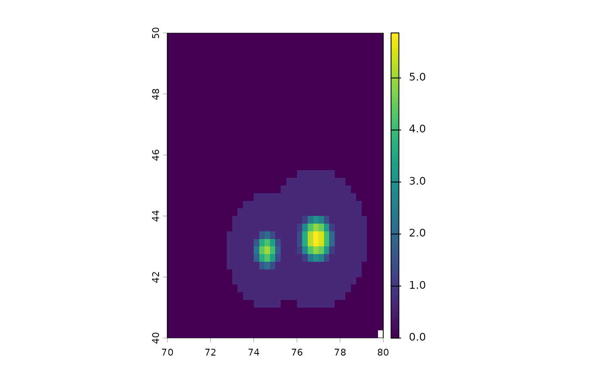

Reads the value, observation-count and quality layers of a Black Marble
monthly or annual tile (VNP46A3, VNP46A4, VJ146A3, VJ146A4) and
georeferences it from the tile id in the file name.
Usage
ntl_read_bm(
file,
variable = NULL,
layers = c("value", "nobs", "quality"),
flip = NA
)Arguments
- file
Path to an
.h5file.- variable
Value layer. Defaults to the product's
value_layer(NearNadir_Composite_Snow_Free). Count and quality layers are<variable>_Numand<variable>_Quality.- layers
Which layers to return, renamed to
value,nobsandquality.- flip
NA(automatic),TRUE(flip the stored grid vertically) orFALSE(use the stored row order as is).
Details
Tiles are read directly with the hdf5r package rather than through GDAL,
because GDAL versions disagree about the row order of these grids (some
return them upside down; see blackmarbler issue #17). The fill value
(the dataset's _FillValue attribute, otherwise 65535 for radiance and
counts and 255 for quality) becomes NA, and scale_factor and
add_offset attributes are applied when present.
Orientation. Rows are taken to run from north to south, as in the
Black Marble product specification. If the file contains a lat dataset
that increases with row number, the grid is flipped. Use flip = TRUE or
FALSE to override, and check one tile against a known city before a
large run (the validation script in inst/scripts does this).
Examples
# A small synthetic tile shipped with the package (real tiles are
# 2400 x 2400 pixels)
f <- system.file("extdata", "VNP46A3.A2023001.h25v04.002.2023040000000.h5",
package = "ntlpanel"
)
r <- ntl_read_bm(f)
r
#> class : SpatRaster
#> size : 40, 40, 3 (nrow, ncol, nlyr)
#> resolution : 0.25, 0.25 (x, y)
#> extent : 70, 80, 40, 50 (xmin, xmax, ymin, ymax)
#> coord. ref. : lon/lat WGS 84 (EPSG:4326)
#> source(s) : memory
#> names : value, nobs, quality
#> min values : 0, 3, 0
#> max values : 352, 12, 2
terra::plot(log1p(r$value))
